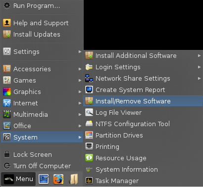
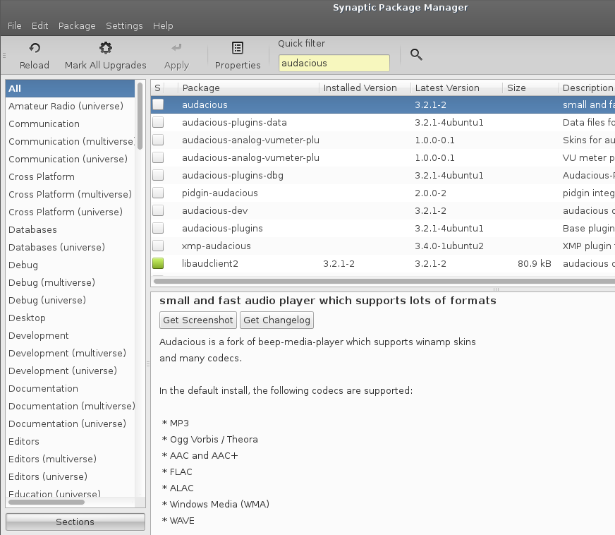
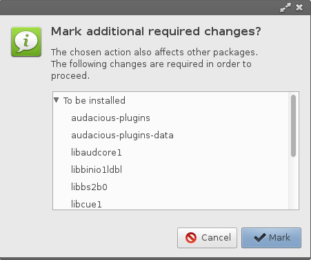
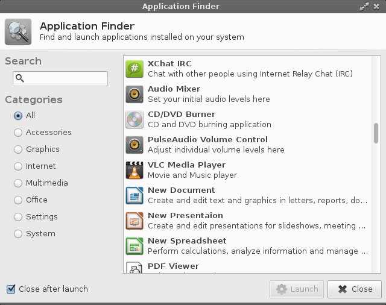
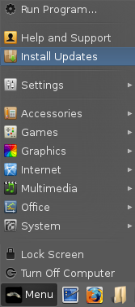
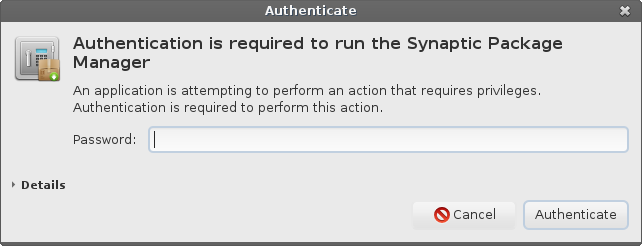
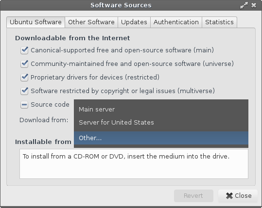
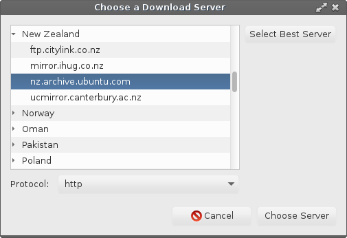
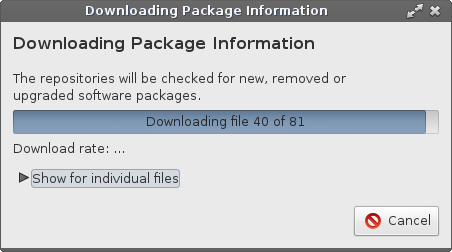

Software & Updates
Updates
Change your Software Updates Country Location
A word on changing Desktop Environments
Installing Software:
Linux Lite uses the Synaptic Package Manager to install software.
To install software use the following steps:
1. Click on Menu, System, Install/Remove Software

2. Make sure All is selected in the left pane and in the Quick Filter box, type in your search query. In this example we will search for the 'audacious' music player.

3. Double click on the package you want to install.
4. Some software will ask you to Mark additional required changes? These are also known as dependencies and are required for the program to function properly.

5. Click on Mark. Now hit the Apply button on the Synaptic toolbar. The software will install and a Menu entry will be created in the relevant Menu category. For audacious the Menu category would be Multimedia.
6. Go to the Menu and your new software will be there. An alternative way to find your new software is to click on Menu, Accessories, Application Finder. Type your program name in the Search box and the result will display on the right. Double click on the program name and it will launch for you.

Uninstalling Software:
7. Uninstalling software is the reverse process of installing software in the Synaptic Package Manager. Type the name of the software into the Search box.
8. Right click on the software and select Mark for Removal. Now hit the Apply button on the Synaptic toolbar and your software will uninstall. Be very careful with this process as you can inadvertently uninstall crucial system software. If you have any doubts, please search the net first to see if it is safe to uninstall the software. Synaptic is pretty good at warning you should there be any potential problems.
Keeping Linux Lite up to date is a simple process.
At the top of your Menu, you will see Install Updates.

We've made the update process as simple as possible. Simply click on Install Updates and you will be asked for your password. The program will then search for updates and if it finds any it will ask you if you want to continue. Type Y and then hit enter if you do and the when the updates have finished the window will close automatically.
Change your Software Updates Country Location
To ensure that you get your updates and software downloaded
as fast as possible, try selecting a location close to you.
In the following tutorial we will show you how to do this.
Click on Menu, System, Install/Remove Software and enter your password.

Synaptic Package Manager will open up, click on Settings, Repositories.
The Software Sources window will pop up. From the Download from: drop down box, select Other...

A Choose a Download Server box will pop up. From here select your country, and then a server, preferably an Ubuntu server if it is listed or another server if an Ubuntu server is not in the list. Click on the Choose Server button once you have made your selection. Now click on Close in the Software Sources window.

In the top left of the Synaptic Package Manager window, click on the Reload button. This will change all the software sources to your location for faster downloads.
The following window will appear, then close when it has finished.

You should now have faster downloads for updates and software installs in Synaptic Package Manager from a location much nearer you.
Changing Desktop Environments:
This distro is a heavily modified version of the XFCE desktop environment. However, being GNU/Linux based allows people the freedom to modify their system as they see fit. There are numerous desktop environments in GNU/Linux. Including but not limited to:
Gnome
KDE
LXDE
Enlightenment
Razor-qt
If you desire to install another desktop environment, we cannot provide specific instructions on how to do this. There are far to many variables involved and much can go wrong. This kind of system modification is best left to experienced Linux users. The whole philosophy behind Linux Lite is to provide new users to Linux based operating systems an easy to use, functional desktop experience. Our development time is spent solely on the XFCE end user experience.